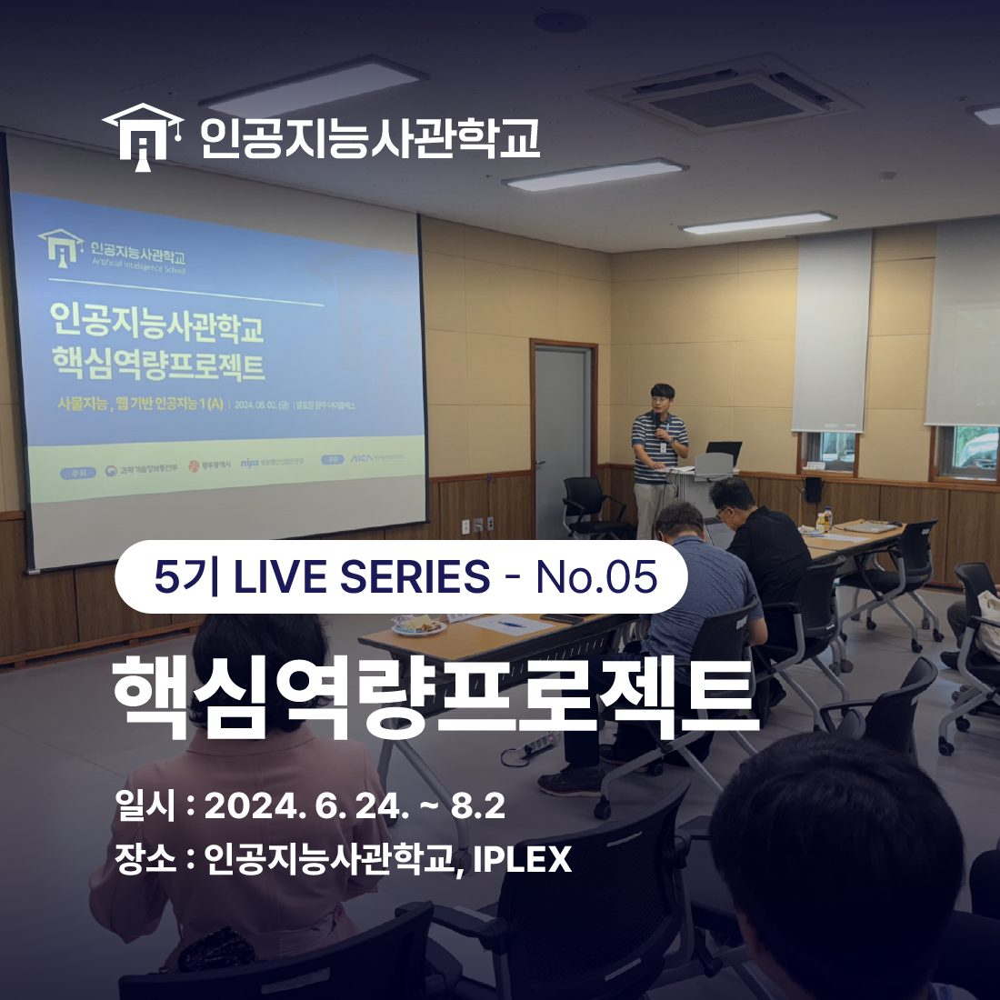
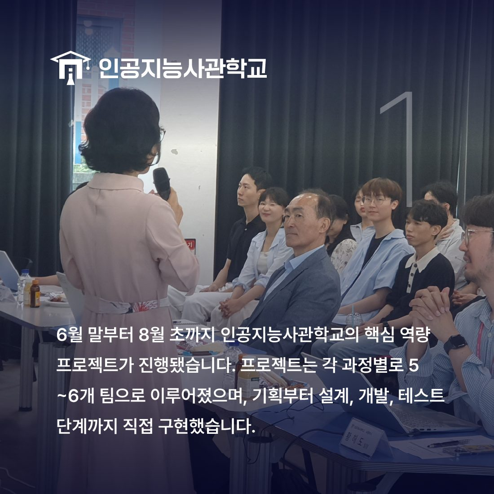
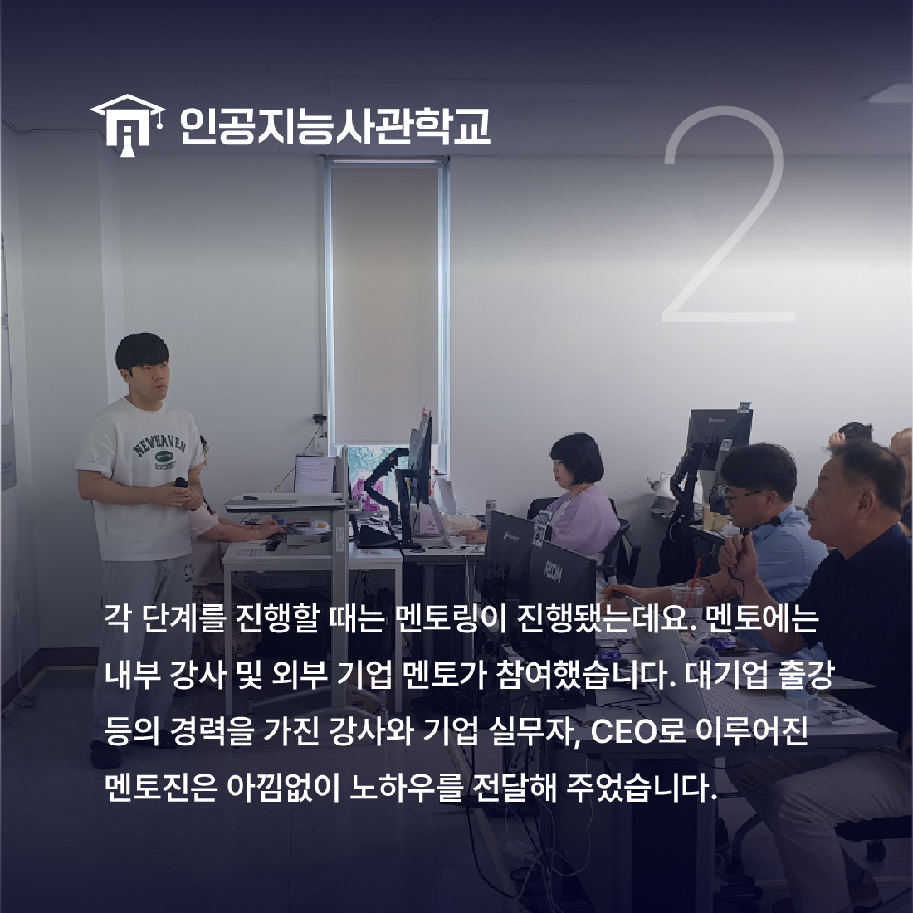
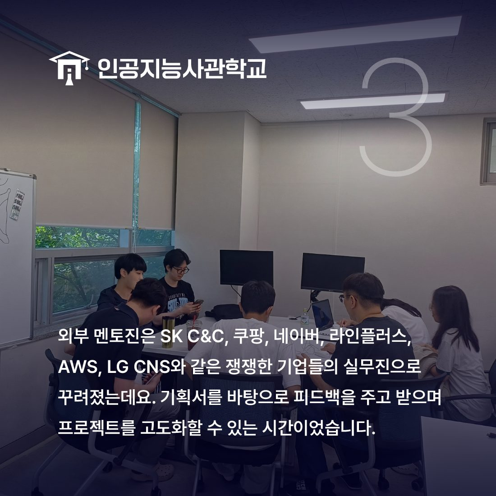
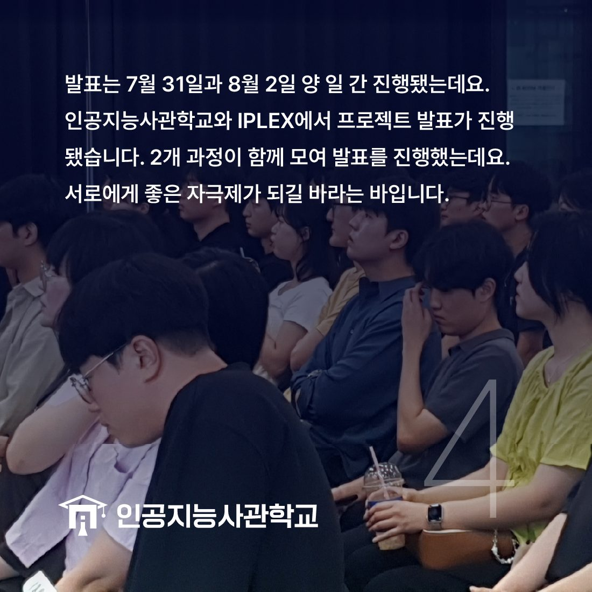
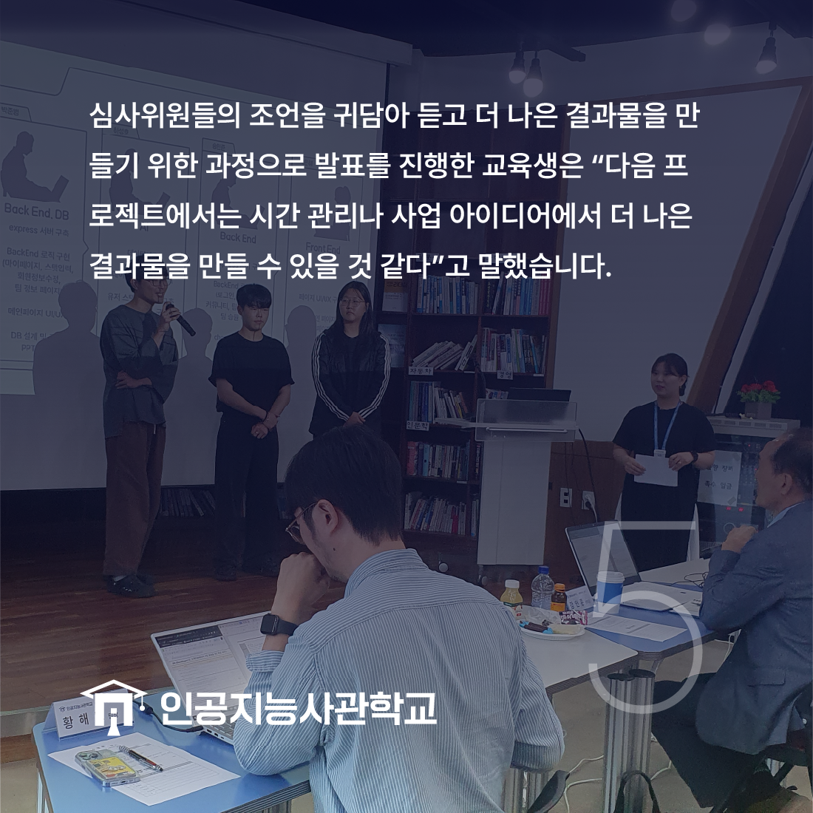

안녕하세요! 인공지능사관학교입니다. 😆

지난 7월 31일, 8월 2일에는
인공지능사관학교 핵심역량프로젝트 발표회가 있었습니다!
6월 말부터 진행된 핵심역량프로젝트는
그동안 배운 핵심 기술을 가지고
핵심 역량을 키울 수 있는 시간인데요.

총 10개 반에서 각 반 별로 5~6개 팀을 이루어져
팀 프로젝트를 경험해보는 시간이었습니다.
기획부터 설계, 개발, 테스트 단계까지 직접! 해볼 수 있는 기회인데요.👍

각 단계를 진행할 때에는 전문가의 멘토링도 함께였습니다.
멘토진은 내부 강사와 외부 실무진으로 이루어졌습니다.

외부 멘토의 경우 지역의 건실한 중견기업부터
SK C&C, AWS 코리아, 쿠팡 등의 쟁쟁한 대기업의 실무진들로
구성되었습니다.

발표는 두 개의 반이 짝이 되어 함께 진행됐는데요.
다른 과정의 학생들의 프로젝트를 함께 보고
공부할 수 있는 시간으로 꾸려졌습니다.

심사위원들도 교육생의 프로젝트에 아낌없는 조언을 남기며
프로젝트 고도화를 위한 노하우를 풀어냈는데요.
이에 귀를 기울이며 최종 프로젝트에는
더욱 알찬 결과물을 만들어내길 바랍니다.😊